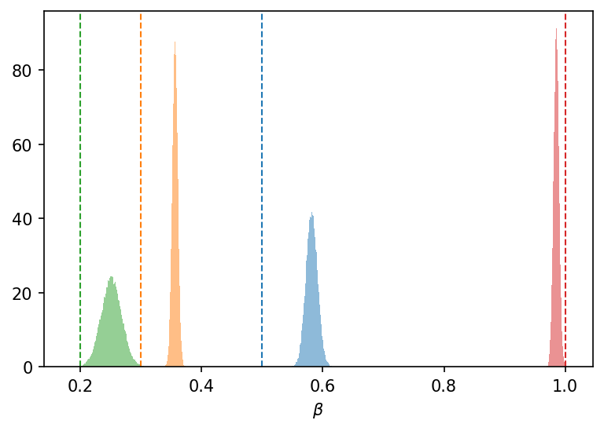

Variational Inference
Here we describe how to do Variational Inference with TorchJune.
We again use the Pyro programming language to automate the complicated stuff for us.
An example configuration file can be found in configs/svi.yaml:
title: SVI example configuration file.
device: "cpu"
june_configuration_file: "./configs/june.yaml"
results_path: "./svi_results"
inference_configuration:
optimizer:
type: Adam
lr: 0.1
n_steps: 10000
loss:
type: Trace_ELBO
num_particles: 1
parameters_to_fit:
infection_networks.networks.household.log_beta:
prior:
dist: Normal
loc: 0.3
scale: 0.1
infection_networks.networks.company.log_beta:
prior:
dist: Normal
loc: 0.1
scale: 0.1
infection_networks.networks.school.log_beta:
prior:
dist: Normal
loc: 0.1
scale: 0.1
infection_networks.networks.visit.log_beta:
prior:
dist: Normal
loc: 0.7
scale: 0.1
emulator:
use_emulator: false
#emulator_config_path: "./configs/emulator.yaml"
emulator_path: "./data/emulator.pkl"
data:
observable:
cases_per_timestep:
time_stamps: [-1]
error: 0.002
observed_data: "./june_example/results.csv"
The interface is very similar to the HMC case, so most of the fields do not need explaining. The particularities of the SVI are specified under inference_configuration, where we specify the optimizer and the loss function to use.
We assume that the posterior distribution over the parameters is a Normal distribution, with parameters $\mu$ and $\sigma$. The values of $\mu$ and $\sigma$ are then found through an optimization problem, where we minimize the ELBO loss:
We can then plot the value of $\mu$ and $\sigma$ for each parameter over the training period:

And finally plot the posteriors:
